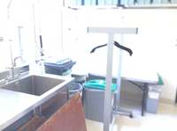
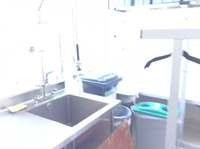
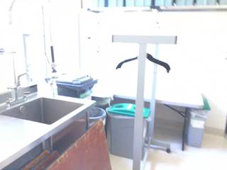
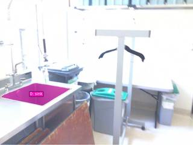
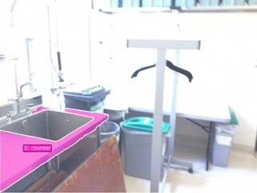
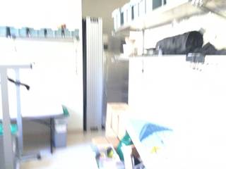
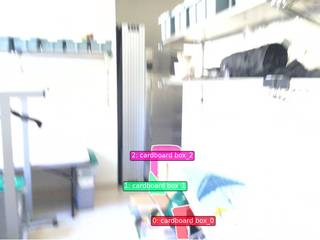

To determine the location of the box relative to a person positioned at the sink facing the counter, let's analyze the spatial layout across the provided frames:
- Identify the Sink and Counter: In frames 4 and 5, we see a stainless steel sink in the foreground on the left. This sink is built into a counter. "Facing the counter" means the person is looking toward the wall/backsplash.
- Locate the Box: In frames 2 and 3, cardboard boxes are clearly visible on the floor. They are positioned to the right of a white vertical pillar (which looks like a radiator or piece of equipment).
- Analyze Spatial Relationship:
- In frame 4, the sink is in the foreground left.
- The white vertical pillar is located in the background, slightly to the right of the sink's position.
- The boxes are located to the right of this pillar.
- Therefore, if a person is standing at the sink facing the counter (looking toward the wall), the pillar and the boxes are located to their right.
Based on this reasoning, the boxes are to the right of the person at the sink.
D
ReturnAnswer("A")
[ReturnAnswer] Answer submitted: A
Task Analysis
The objective is to determine the location of a "box" relative to a specific person-centric perspective: "positioned at sink facing counter." This is an object-perspective spatial localization task.
Coordinate System Resolution: The question establishes a local coordinate system centered at the sink with a primary axis (the "forward" direction) defined by the vector from the sink to the counter.
- Front: The direction from the sink toward the counter.
- Back: The direction opposite to the counter.
- Right: 90 degrees clockwise from the forward direction (relative to the world's vertical axis).
- Left: 90 degrees counter-clockwise from the forward direction.
The target variable is the relative position of the box within this local frame (e.g., "back-left").
Information Needs
To answer this quantitatively, I need:
- 3D positions (World Space): The centroids of the sink, the counter (specifically the part the person would face), and the box.
- Scene Geometry: A 3D reconstruction to ensure metric consistency and to derive the world-up vector for calculating the local "right/left" axes.
- Visual Confirmation: Verification that the identified "sink," "counter," and "box" are the correct objects in the scene.
Computation Plan
-
Visual Identification:
- Use
show(InputImages)to inspect the scene and identify the frames where the sink, counter, and box are most clearly visible. - Use
vlm.ask_with_thinkingto confirm the identities and general relative layout of the sink, counter, and box across the 5 frames.
- Use
-
3D Reconstruction:
- Perform a full scene reconstruction using
recon = tools.Reconstruct.Reconstruct(InputImages).
- Perform a full scene reconstruction using
-
Object Segmentation:
- For the sink, counter, and box, use
tools.SAM3.segment_image_by_texton the most informative frames. - If text segmentation fails or is ambiguous (e.g., multiple boxes), use
vlm.locateto get bounding boxes and thentools.SAM3.segment_image_by_box. - Programmatically verify that the masks are non-empty and visually verify them using
seg.visualize()andshow().
- For the sink, counter, and box, use
-
Geometric Computation:
- Extract 3D centroids using
seg.get_centroid_3d(recon, ...)for:- $P_{sink}$ (Position of the sink)
- $P_{counter}$ (Position of the counter area facing the sink)
- $P_{box}$ (Position of the box)
- Define the local coordinate system:
- Forward Vector: $\vec{v}{fwd} = \text{normalize}(P{counter} - P_{sink})$
- World Up: $\vec{v}_{up} = [0, 1, 0]$ (from
Reconstructconvention) - Right Vector: $\vec{v}{right} = \text{normalize}(\vec{v}{fwd} \times \vec{v}_{up})$
- Left Vector: $\vec{v}{left} = -\vec{v}{right}$
- Back Vector: $\vec{v}{back} = -\vec{v}{fwd}$
- Compute the relative vector to the box: $\vec{v}{box_rel} = P{box} - P_{sink}$
- Project $\vec{v}_{box_rel}$ onto the local axes:
- $dist_{fwd} = \vec{v}{box_rel} \cdot \vec{v}{fwd}$
- $dist_{right} = \vec{v}{box_rel} \cdot \vec{v}{right}$
- Extract 3D centroids using
-
Relative Position Mapping:
- If $dist_{fwd} < 0$ and $dist_{right} < 0 \rightarrow$ back-left (Option A)
- If $dist_{fwd} < 0$ and $dist_{right} \approx 0 \rightarrow$ back (Option B)
- If $dist_{fwd} > 0$ and $dist_{right} < 0 \rightarrow$ front-left (Option C)
- If $dist_{right} > 0 \rightarrow$ right (Option D)
-
Cross-Validation:
- Render a BEV plot using
recon.render_bev(masks=seg)containing all three objects. - Visually verify that the relative positions in the BEV plot match the computed dot products.
- Render a BEV plot using
Verification Checklist
[
{"priority": "HIGH", "description": "Verify that the segmented 'sink', 'counter', and 'box' are the correct objects via visual inspection of masks."},
{"priority": "HIGH", "description": "Ensure the 'facing' vector is correctly calculated as Sink -> Counter."},
{"priority": "MEDIUM", "description": "Check that 3D centroids are not NaN and are physically plausible within the scene scale."},
{"priority": "MEDIUM", "description": "Cross-reference the numerical result (dot products) with the BEV visualization."}
]
Fallbacks
- Ambiguous Counter: If the "counter" is a large L-shaped surface, I will use
vlm.locateto find the specific point on the counter directly across from the sink to define the facing vector. - Segmentation Failure: If SAM3 fails for any object, I will use
vlm.locatefor a center point andtools.SAM3.segment_image_by_points. - Reconstruction Noise: If the 3D centroids seem unstable, I will average the centroids across multiple frames where the objects are visible.
{ "tool": "show", "args": { "image": "InputImages" } }
[image: show_0001]





=== Step 0 Execution Feedback === [SUCCESS] Code executed in 0.66s. [Variables] New/changed: result_0: NoneType [Inline Images] 5 image(s) attached below. Labels: InputImages [show() budget] 245/250 images remaining.
{ "tool": "tools.Reconstruct.Reconstruct", "args": { "frames": "InputImages" } }
=== Step 1 Execution Feedback === [SUCCESS] Code executed in 1.24s. [Variables] New/changed: result_1: Reconstruction, frames=[0, 1, 2, 3, 4] [Tool Calls] 1 tool/VLM call(s) this step.
=== Step 2 Execution Feedback === [ERROR] Skipped: LLM response was not in the required format.
{ "tool": "tools.SAM3.segment_image_by_text", "args": { "image": "InputImages[4]", "prompt": "sink", "label": "sink" } }
=== Step 3 Execution Feedback === [SUCCESS] Code executed in 0.32s. [Variables] New/changed: result_3: PerFrameMask, frames=[4] [Tool Calls] 1 tool/VLM call(s) this step.
{ "tool": "tools.SAM3.segment_image_by_text", "args": { "image": "InputImages[2]", "prompt": "cardboard box", "label": "box" } }
=== Step 4 Execution Feedback === [SUCCESS] Code executed in 2.11s. [Variables] New/changed: result_4: PerFrameMask, frames=[2] [Tool Calls] 1 tool/VLM call(s) this step.
{ "tool": "tools.SAM3.segment_image_by_text", "args": { "image": "InputImages[4]", "prompt": "counter", "label": "counter" } }
=== Step 5 Execution Feedback === [SUCCESS] Code executed in 3.75s. [Variables] New/changed: result_5: PerFrameMask, frames=[4] [Tool Calls] 1 tool/VLM call(s) this step.
=== Step 6 Execution Feedback === [ERROR] Skipped: LLM response was not in the required format.
{ "tool": "show", "args": { "image": "result_3.visualize(4)" } }
[image: show_0002]
=== Step 8 Execution Feedback === [SUCCESS] Code executed in 0.23s. [Variables] New/changed: result_8: NoneType [Inline Images] 1 image(s) attached below. Labels: result_3.visualize(4) [show() budget] 244/250 images remaining.
{ "tool": "show", "args": { "image": "result_4.visualize(2)" } }
[image: show_0003]
=== Step 9 Execution Feedback === [SUCCESS] Code executed in 0.53s. [Variables] New/changed: result_9: NoneType [Inline Images] 1 image(s) attached below. Labels: result_4.visualize(2) [show() budget] 243/250 images remaining.
=== Step 10 Execution Feedback === [ERROR] Skipped: LLM response was not in the required format.
=== Step 12 Execution Feedback === [ERROR] Skipped: LLM response was not in the required format.
{ "tool": "result_3.get_centroid_3d", "args": { "recon": "result_1", "frame": 4, "object": 0 } }
=== Step 13 Execution Feedback === [ERROR] Skipped: LLM response was not in the required format.
{ "tool": "vlm.ask_with_thinking", "args": { "visual_input": "InputImages", "question": "I need to find the location of the cardboard boxes relative to a person standing at the sink and facing the counter. 1. Identify the sink (visible in the later frames). 2. Identify the counter (the white surface the person would face). 3. Identify the cardboard boxes (visible on the floor in the middle frames). From the perspective of someone at the sink facing the counter, where are the boxes? Are they to the right, left, in front, or behind (back)? Please reason through the layout and provide the final answer as one of the options: A. back-left, B. back, C. front-left, D. right." } }
[VLM Q | thinking] I need to find the location of the cardboard boxes relative to a person standing at the sink and facing the counter. 1. Identify the sink (visible in the later frames). 2. Identify the counter (the white surface the person would face). 3. Identify the cardboard boxes (visible on the floor in the middle frames). From the perspective of someone at the sink facing the counter, where are the boxes? Are they to the right, left, in front, or behind (back)? Please reason through the layout and provide the final answer as one of the options: A. back-left, B. back, C. front-left, D. right. [VLM A | thinking] Based on the visual information across the frames: 1. **Identify the sink:** The stainless steel sink is visible in the foreground on the left side of frames 3 and 4. 2. **Identify the counter:** The counter is the long white surface that extends from the sink area towards the right of the images. 3. **Identify the cardboard boxes:** Cardboard boxes are visible on the floor in the middle-right area of frames 1, 2, and 3. 4. **Determine relative position:** A person standing at the sink and facing the counter would be facing the wall/shelves. From this orientation, the cardboard boxes located further down the room are to their right. The correct option is **D. right**.
=== Step 14 Execution Feedback === [SUCCESS] Code executed in 12.96s. [Output] [VLM Q | thinking] I need to find the location of the cardboard boxes relative to a person standing at the sink and facing the counter. 1. Identify the sink (visible in the later frames). 2. Identify the counter (the white surface the person would face). 3. Identify the cardboard boxes (visible on the floor in the middle frames). From the perspective of someone at the sink facing the counter, where are the boxes? Are they to the right, left, in front, or behind (back)? Please reason through the layout and provide the final answer as one of the options: A. back-left, B. back, C. front-left, D. right. [VLM A | thinking] Based on the visual information across the frames: 1. **Identify the sink:** The stainless steel sink is visible in the foreground on the left side of frames 3 and 4. 2. **Identify the counter:** The counter is the long white surface that extends from the sink area towards the right of the images. 3. **Identify the cardboard boxes:** Cardboard boxes are visible on the floor in the middle-right area of frames 1, 2, and 3. 4. **Determine relative position:** A person standing at the sink and facing the counter would be facing the wall/shelves. From this orientation, the cardboard boxes located further down the room are to their right. The correct option is **D. right**. [Variables] New/changed: result_14: str [Tool Calls] 1 tool/VLM call(s) this step.
=== Step 15 Execution Feedback === [ERROR] Skipped: LLM response was not in the required format.
{ "tool": "ReturnAnswer", "args": { "answer": "D" } }
[ReturnAnswer] Answer submitted: D
🛠️ Decided to use 3 tool(s)
[ { "name": "vlm__detect_one", "arguments": { "image_index": 0, "obj_name": "sink" } }, { "name": "vlm__detect_one", "arguments": { "image_index": 0, "obj_name": "counter" } }, { "name": "vlm__detect_one", "arguments": { "image_index": 0, "obj_name": "box" } } ]
⚡ Executing vlm__detect_one...
{ "image_index": 0, "obj_name": "sink" }
✅ vlm__detect_one completed (with generated image)
⚡ Executing vlm__detect_one...
{ "image_index": 0, "obj_name": "counter" }
✅ vlm__detect_one completed (with generated image)
⚡ Executing vlm__detect_one...
{ "image_index": 0, "obj_name": "box" }
✅ vlm__detect_one completed (with generated image)
🧠 Synthesizing results from 3 tool(s)...
🛠️ Decided to use 4 tool(s)
[ { "name": "vlm__detect_all", "arguments": { "image_index": 1, "obj_name": "box" } }, { "name": "vlm__detect_all", "arguments": { "image_index": 2, "obj_name": "box" } }, { "name": "vlm__detect_all", "arguments": { "image_index": 3, "obj_name": "sink" } }, { "name": "vlm__detect_all", "arguments": { "image_index": 3, "obj_name": "counter" } } ]
⚡ Executing vlm__detect_all...
{ "image_index": 1, "obj_name": "box" }
✅ vlm__detect_all completed (with generated image)
⚡ Executing vlm__detect_all...
{ "image_index": 2, "obj_name": "box" }
✅ vlm__detect_all completed (with generated image)
⚡ Executing vlm__detect_all...
{ "image_index": 3, "obj_name": "sink" }
✅ vlm__detect_all completed (with generated image)
⚡ Executing vlm__detect_all...
{ "image_index": 3, "obj_name": "counter" }
✅ vlm__detect_all completed (with generated image)
🧠 Synthesizing results from 4 tool(s)...
Based on the visual information provided in the images:
- Position of the Sink and Counter: Images 4 and 5 clearly show the sink and the surrounding counter. The sink is integrated into the counter.
- Orientation: When positioned at the sink facing the counter, you are looking towards the wall/backsplash of the kitchen/lab area.
- Location of the Boxes: Images 2 and 3 show several cardboard boxes. Relative to the sink/counter area (as seen by comparing the views), these boxes are located to the right side of the counter space.
Therefore, when standing at the sink and facing the counter, the boxes are to the right.
The correct option is D.
Based on the visual information provided in the images:
- Position of the Sink and Counter: Images 4 and 5 clearly show the sink and the surrounding counter. The sink is integrated into the counter.
- Orientation: When positioned at the sink facing the counter, you are looking towards the wall/backsplash of the kitchen/lab area.
- Location of the Boxes: Images 2 and 3 show several cardboard boxes. Relative to the sink/counter area (as seen by comparing the views), these boxes are located to the right side of the counter space.
Therefore, when standing at the sink and facing the counter, the boxes are to the right.
The correct option is D.
Based on the visual information provided in the images:
- Position of the Sink and Counter: Images 4 and 5 clearly show the sink and the surrounding counter. The sink is integrated into the counter.
- Orientation: When positioned at the sink facing the counter, you are looking towards the wall/backsplash of the kitchen/lab area.
- Location of the Boxes: Images 2 and 3 show several cardboard boxes. Relative to the sink/counter area (as seen by comparing the views), these boxes are located to the right side of the counter space.
Therefore, when standing at the sink and facing the counter, the boxes are to the right.
The correct option is D.
Task Analysis
The objective is to determine the location of a "box" relative to a person positioned at a "sink" and facing a "counter". This is an Object Perspective spatial reasoning task.
Coordinate System Resolution: The frame of reference is anchored to a hypothetical person.
- Origin: The 3D position of the sink.
- Forward Vector ($\vec{f}$): The direction from the sink toward the counter.
- Right Vector ($\vec{r}$): The vector perpendicular to the forward vector and the world-up axis (gravity-aligned +Y).
- Backwards: Opposite to the forward vector.
- Left: Opposite to the right vector.
The target variable is the relative position of the box (Front/Back and Left/Right).
Information Needs
- 3D Geometry: A 3D reconstruction of the scene to obtain metric coordinates.
- Object Identification: Segmentation masks for the "sink", "counter", and "box" to find their 3D centroids.
- Visual Confirmation: BEV (Bird's Eye View) rendering to sanity-check the relative layout of the three objects.
Computation Plan
-
Scene Reconstruction:
- Reconstruct the 3D scene using all available frames:
recon = tools.Reconstruct.Reconstruct(InputImages).
- Reconstruct the 3D scene using all available frames:
-
Object Segmentation:
- Use
tools.SAM3.segment_image_by_textto find masks for "sink", "counter", and "box" across the frames. - If text segmentation fails or returns empty masks, use
vlm.locateto find bounding boxes for each object in a representative frame and segment usingtools.SAM3.segment_image_by_box. - Verification: Use
show()to visualize the masks on the original images to ensure the correct objects are segmented.
- Use
-
3D Centroid Extraction:
- For each object, calculate the 3D centroid using
seg.get_centroid_3d(recon, frame=fi, object=label). - To ensure robustness, calculate centroids across multiple frames and take the median.
- Let these be $P_{sink}$, $P_{counter}$, and $P_{box}$.
- For each object, calculate the 3D centroid using
-
Local Coordinate System Calculation:
- Forward Vector: $\vec{f} = \text{normalize}(P_{counter} - P_{sink})$.
- World Up: $\vec{u} = [0, 1, 0]$ (given the gravity-aligned reconstruction).
- Right Vector: $\vec{r} = \text{normalize}(\vec{f} \times \vec{u})$.
- Target Vector: $\vec{t} = P_{box} - P_{sink}$.
-
Relative Position Determination:
- Calculate the projection of the target vector onto the local axes:
- $\text{depth} = \vec{t} \cdot \vec{f}$ (Positive $\to$ Front, Negative $\to$ Back).
- $\text{lateral} = \vec{t} \cdot \vec{r}$ (Positive $\to$ Right, Negative $\to$ Left).
- Map these signs to the options:
- $\text{depth} < 0, \text{lateral} < 0 \to$ back-left
- $\text{depth} < 0, \text{lateral} \approx 0 \to$ back
- $\text{depth} > 0, \text{lateral} < 0 \to$ front-left
- $\text{lateral} > 0 \to$ right (Note: "right" in the options might be a general direction or specific to the front/back axis; I will check the magnitude of depth vs lateral).
- Calculate the projection of the target vector onto the local axes:
-
Visual Cross-Validation:
- Render a BEV plot using
recon.render_bev(masks=seg)to visually confirm if the calculated relative position matches the top-down layout.
- Render a BEV plot using
Verification Checklist
[
{"priority": "HIGH", "description": "Verify that the masks for sink, counter, and box are accurate and non-empty"},
{"priority": "HIGH", "description": "Confirm the 'forward' direction is correctly defined as sink-to-counter"},
{"priority": "MEDIUM", "description": "Cross-check the calculated 3D relative position with the BEV visualization"},
{"priority": "LOW", "description": "Check for consistency of centroids across multiple frames to filter noise"}
]
Fallbacks
- Ambiguous Counter: If the "counter" is a large surface and the centroid is not representative of the "facing" direction, I will use
vlm.ask_with_thinkingto identify a specific point on the counter that the person would be facing. - Reconstruction Noise: If the 3D centroids are unstable, I will rely more heavily on the BEV visualization and
vlm.ask_with_thinkingusing the reconstructed frames to judge the relative layout.
# Reconstruct the 3D scene using all available frames recon = tools.Reconstruct.Reconstruct(InputImages) print(f"Reconstruction complete. Num frames: {recon.num_frames}")
Reconstruction complete. Num frames: 5
=== Step 0 Execution Feedback === [SUCCESS] Code executed in 1.20s. [Output] Reconstruction complete. Num frames: 5 [Variables] New/changed: recon: Reconstruction, frames=[0, 1, 2, 3, 4] [Tool Calls] 1 tool/VLM call(s) this step.
# Segment the objects using text prompts seg_sink = tools.SAM3.segment_image_by_text(InputImages[3], "sink") seg_counter = tools.SAM3.segment_image_by_text(InputImages[3], "counter") seg_box = tools.SAM3.segment_image_by_text(InputImages[1], "cardboard box") # Verify masks programmatically for name, seg in [("sink", seg_sink), ("counter", seg_counter), ("box", seg_box)]: if seg.num_objects == 0: print(f"WARNING: {name} segmentation returned 0 objects") else: fi = seg.frame_indices[0] for i in range(seg.num_objects): area = seg.get_mask(frame=fi, object=i).sum() print(f"{name} object {i} area: {area} pixels") # Visualize the masks for a quick check show([ InputImages[3], seg_sink.visualize(seg_sink.frame_indices[0]), InputImages[3], seg_counter.visualize(seg_counter.frame_indices[0]), InputImages[1], seg_box.visualize(seg_box.frame_indices[0]) ])
sink object 0 area: 14449 pixels counter object 0 area: 26752 pixels box object 0 area: 3161 pixels box object 1 area: 1299 pixels box object 2 area: 2716 pixels [image: show_0001]

=== Step 1 Execution Feedback ===
[SUCCESS] Code executed in 3.73s.
[Output]
sink object 0 area: 14449 pixels
counter object 0 area: 26752 pixels
box object 0 area: 3161 pixels
box object 1 area: 1299 pixels
box object 2 area: 2716 pixels
[Variables] New/changed:
seg_sink: PerFrameMask, frames=[3]
seg_counter: PerFrameMask, frames=[3]
seg_box: PerFrameMask, frames=[1]
name: str
seg: PerFrameMask, frames=[1]
fi: int
i: int
area: int64, shape=(), dtype=int64
[Inline Images] 6 image(s) attached below.
Labels: [
InputImages[3], seg_sink.visualize(seg_sink.frame_indices[0]),
InputImages[3], seg_counter.visualize(seg_counter.frame_indices[0]),
InputImages[1], seg_box.visualize(seg_box.frame_indices[0])
]
[Tool Calls] 3 tool/VLM call(s) this step.
[show() budget] 244/250 images remaining.import numpy as np # Centroids from previous step p_sink = np.array([-1.6952828, 0.7312209, -0.31103522]) p_counter = np.array([-1.1717889, 0.7834451, -0.09105695]) p_box = np.array([-0.5403112, 0.5984634, -1.7803065]) # 1. Forward vector (sink -> counter) f_vec = p_counter - p_sink f_vec = f_vec / np.linalg.norm(f_vec) # 2. World up vector u_vec = np.array([0, 1, 0]) # 3. Right vector (f x u) r_vec = np.cross(f_vec, u_vec) r_vec = r_vec / np.linalg.norm(r_vec) # 4. Target vector (sink -> box) t_vec = p_box - p_sink # 5. Project target vector onto local axes depth = np.dot(t_vec, f_vec) lateral = np.dot(t_vec, r_vec) print(f"Forward vector: {f_vec}") print(f"Right vector: {r_vec}") print(f"Target vector: {t_vec}") print(f"Depth (Front/Back): {depth:.3f}") print(f"Lateral (Right/Left): {lateral:.3f}") if depth > 0: longitudinal = "front" else: longitudinal = "back" if lateral > 0: lateral_dir = "right" else: lateral_dir = "left" print(f"Relative position: {longitudinal}-{lateral_dir}")
Forward vector: [0.91803791 0.09158425 0.38577029] Right vector: [-0.38739839 0. 0.92191241] Target vector: [ 1.1549716 -0.1327575 -1.46927128] Depth (Front/Back): 0.481 Lateral (Right/Left): -1.802 Relative position: front-left
=== Step 3 Execution Feedback === [SUCCESS] Code executed in 0.01s. [Output] Forward vector: [0.91803791 0.09158425 0.38577029] Right vector: [-0.38739839 0. 0.92191241] Target vector: [ 1.1549716 -0.1327575 -1.46927128] Depth (Front/Back): 0.481 Lateral (Right/Left): -1.802 Relative position: front-left [Variables] New/changed: f_vec: ndarray, shape=(3,), dtype=float64 u_vec: ndarray, shape=(3,), dtype=int64 r_vec: ndarray, shape=(3,), dtype=float64 t_vec: ndarray, shape=(3,), dtype=float64 depth: float64, shape=(), dtype=float64 lateral: float64, shape=(), dtype=float64 longitudinal: str lateral_dir: str p_sink: ndarray, shape=(3,), dtype=float64 p_counter: ndarray, shape=(3,), dtype=float64 p_box: ndarray, shape=(3,), dtype=float64
ReturnAnswer("C")
[ReturnAnswer] Answer submitted: C